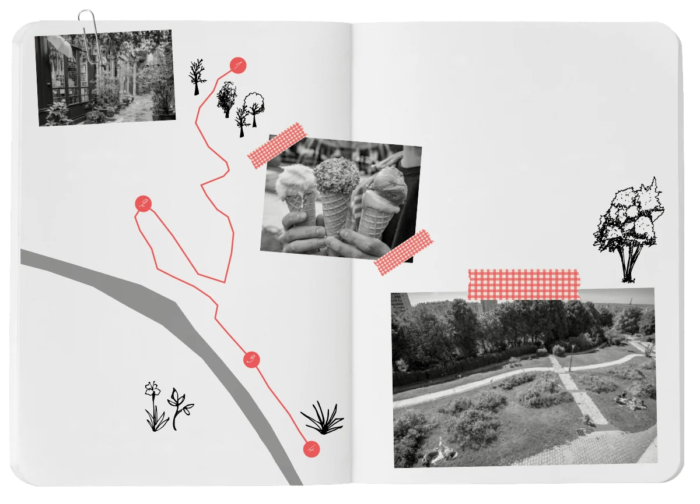
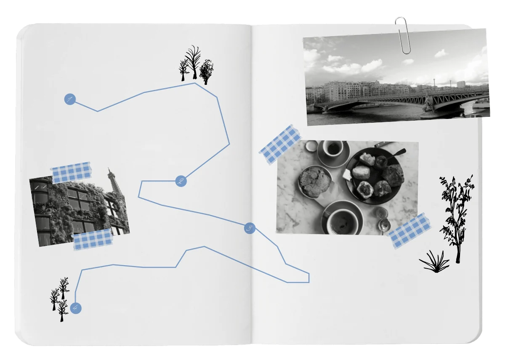
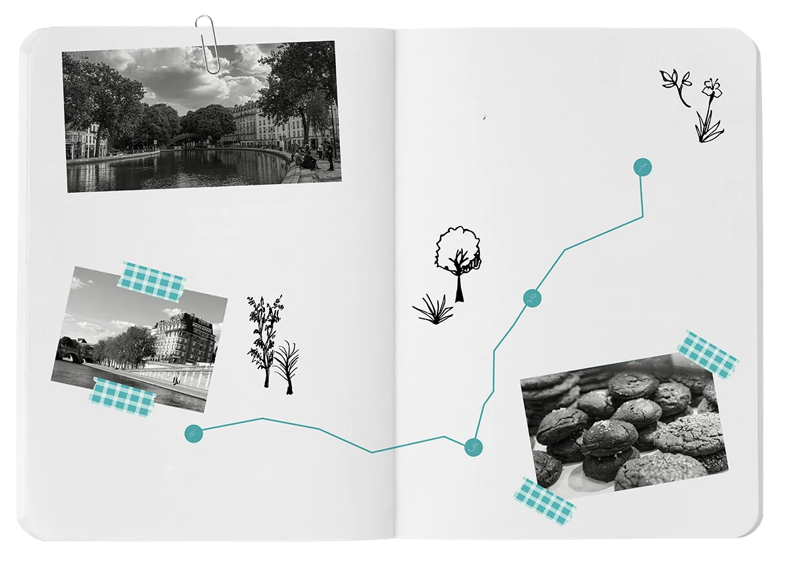

Для этого мы подготовили для вас три маршрута: берите Vélib’, надевайте солнечные очки и ловите спиной августовский ветер!
Сквозь деревни Парижа
Для тех, кто любит панорамные виды, тишину и мощёные улочки.

Анкр
аббата Жоржа Энока
тишины и мощёных улочек.
10:30, старт в Бельвиле
Встречаемся на улице Левер, 8, в Miliki: здесь ваш первый кофе за день. Потом поднимайтесь на самый верх парка Бельвиль. Оставьте велосипед напротив смотровой площадки на улице Пиа и не спеша полюбуйтесь видом. Перед тем как ехать дальше, загляните в Urban Bakery за неприлично вкусной бриошью – официальным топливом для ваших ног.
12:00
Отпустите тормоза и катитесь вниз, к Маре, чтобы проскользнуть в пассаж Анкр. Ищите неприметную дверь между домом 223 по улице Сен-Мартен и улицей Тюрбиго. Пройдитесь пешком по этой утопающей в цветах улочке: здесь хочется говорить шёпотом, чтобы не разбудить розы. Сразу после этого мчитесь к Этьен-Марсель, в Bältis, за мороженым с флёрдоранжем и алеппской фисташкой. У него вкус настоящих каникул!
15:00
Переезжайте Сену через остров Сен-Луи и держите курс на юг, в 13-й округ. Здесь одна улица называется улицей Глициний (rue des Glycines), другая – сквером Тополей (square des Peupliers)… Ставни распахнуты, сады выплёскиваются на тротуар. Вы невольно спросите себя, не уехали ли случайно из Парижа.
18:30
Оставьте велосипед на площади Аббата Жоржа Энока и садитесь за столик в Les Peupliers, на углу улицы Шарля Фурье. Бокал хорошо охлаждённого белого, терраса и отпускники, которые спорят о судьбах мира. Квартальное бистро как оно есть.
Побег за прохладой
Для тех, кто любит тень, плеск воды и висячие сады.

набережной
Бранли
плеск воды
и висячие сады.
11:00, старт у моста Мирабо
Встречаемся в 15-м округе, у подножия статуй моста Мирабо. Прежде чем сесть в седло, поднимитесь по улице Лурмель до дома 23, в O Coffee, на австралийский бранч: пышные панкейки, банановый хлеб и флэт уайт, от которого можно упасть. Отличное начало дня!
14:00
Поезжайте вдоль Сены по широким велодорожкам набережной Жака Ширака. Эйфелева башня сопровождает вас, но настоящая остановка за прохладой – это зелёная стена музея на набережной Бранли. Возьмите холодный эспрессо в Terres de Café, в двух шагах, на авеню Ла-Бурдонне, и подставьте лицо свежему ветерку.
16:00
Сверните с асфальта вглубь 15-го округа и поднимитесь на Пти-Сэнтюр. Эту бывшую железную дорогу оставили цветам и птицам. Вдали от шума машин вы будете крутить педали в тишине зелёного собора.
19:00
Завершите петлю на улице Аллере, 4, совсем рядом с мэрией 15-го округа, в Cavapapa. Доска закусок на компанию, холодное розе и это восхитительное ощущение отпуска без единого собранного чемодана.
Прогулка вдоль воды
Для тех, кто хочет крутить педали без усилий, подставив лицо ветру и глядя в синеву.

без усилий, лицом к ветру
и глядя в синеву.
Ла-Виллет
Сен-Мартен
Отель-де-Виль
16:00, старт у бассейна Ла-Виллет
Встречаемся на набережной Луары, прямо напротив кинотеатра MK2. Прежде чем взять Vélib’, загляните в Kiez Kanal за холодным домашним лимонадом. В седло – и вдоль канала Урк по велодорожке!
17:30
Сверните к каналу Сен-Мартен: здесь тень деревьев и расслабленная атмосфера квартала. Задержитесь на пару минут у мостика Арлетти и посмотрите, как ныряют самые отчаянные. Совсем рядом, в Ten Belles на улице Гранж-о-Бель, 10, возьмите их знаменитое печенье с шоколадом и солью флёр-де-сель. Потом расскажете!
18:30
Езжайте прямо: велодорожка выведет вас на бульвар Ришар-Ленуар, а потом на площадь Бастилии. Оттуда спускайтесь к набережным Сены. Остаётся только крутить педали по прямой, между Консьержери слева и Лувром справа, и ни один светофор не собьёт вам темп.
20:00
Оставьте велосипед у Нового моста и спуститесь на набережную Межисри, в Les Maquereaux Rive Droite. Устраивайтесь на террасе у воды или прямо на барже. В программе: свежайшие устрицы, жареная рыбка, бокал совиньона и закат над Сеной. Волшебство: вы уже на месте и даже не вспотели.
Что почитать ещё
Барахолки и блошиные рынки Парижа
Метро Парижа: поезда без машиниста, станции и штрафы
Все статьи для туристов